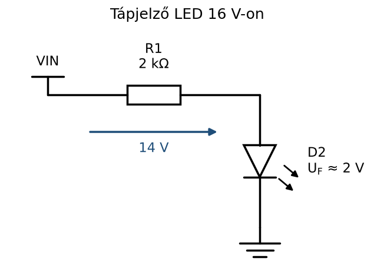
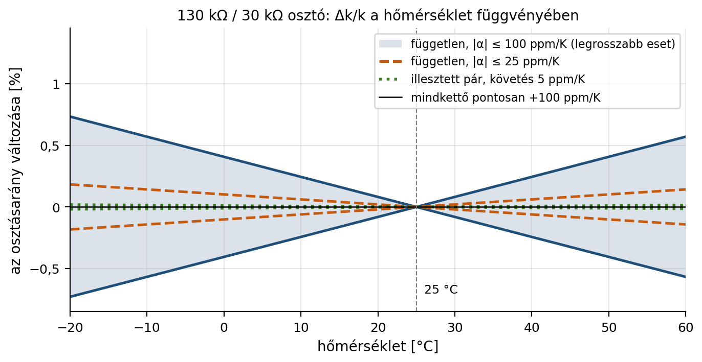
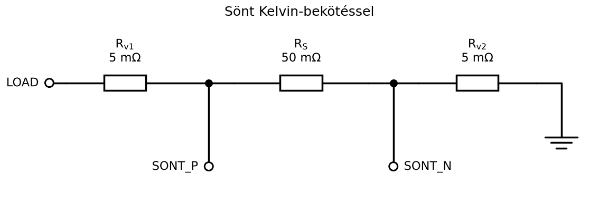

Ebben az alfejezetben megtanulod ellenőrizni, hogy egy ellenállás bírja-e a rá jutó teljesítményt és feszültséget az adott környezeti hőmérsékleten, kiszámolni, mennyit változik az értéke a hőmérséklettel, és a feladathoz illő ellenállástípust választani. Előfeltétel: Ellenállás és az Ohm-törvény és E-sorok, tűrés és jelölések.
A szenzormodul +12V tápjelző LED-jének előtétje 2 kΩ. A bemenet azonban 16 V-ig üzemelhet, ekkor az ellenállásra V jut, és

Egy 0603-as méretű ellenállás névleges teljesítménye (mintaadat) 100 mW. Belefér? És ha a modul egy dobozban 60 °C-on dolgozik? A másik kérdés a mérés: az előző alfejezet 130 kΩ / 30 kΩ osztója mennyit „vándorol”, ha a modul −20 °C-ról 60 °C-ra melegszik? A névérték és a tűrés erre nem válaszol.
Az ellenállás kis fűtőtest. A benne hővé alakuló teljesítmény () a környezet felé távozik, mégpedig annál nehezebben, minél kisebb a tok. Gondolj egy lyukas vödörre: a beöntött víz a teljesítmény, a lyukon kifolyó a hőleadás, a vízszint a hőmérséklet. A szint addig emelkedik, amíg a kifolyás (amely a szinttel arányos) utol nem éri a befolyást. A vödörnek van pereme: ez a legnagyobb megengedett elemhőmérséklet, efölött a réteg maradandóan megváltozik vagy tönkremegy. (A hasonlat korlátja: a valóságban a hő a kivezetéseken, a NYÁK rezén és a levegőn is távozik, és ezek a körülményektől függenek.)
Gondolkodj előre: ha a környezet hőmérséklete már majdnem akkora, mint a legnagyobb megengedett elemhőmérséklet, mennyi teljesítményt vehet fel az ellenállás? Nézd meg az ábra bal oldalát.
A válasz: majdnem semennyit, mert nincs hová leadni a hőt. Ezért a megengedett teljesítmény egy töréspontig a névleges érték, onnan egyenesen csökken nulláig.
Definíció. A névleges teljesítmény (rated power) az a legnagyobb tartós teljesítmény, amelyet az ellenállás a megadott környezeti hőmérsékletig (és az adatlapban rögzített szerelési feltételek mellett) károsodás nélkül leadhat. A teljesítménycsökkentés (derating) görbe megadja, hogy ennél melegebb környezetben mennyi engedhető meg.
A jellegzetes görbe egy törött egyenes: töréspontig állandó, onnan lineárisan csökken, és a hőmérsékleten nulla:
a környezeti hőmérséklet (ambient
temperature). A tört dimenzió nélküli, az eredmény watt. A
°C és
°C mintaadat: gyakori, de adatlapfüggő
(ellenőrizendő: az ellenállás adatlapja). A ferde szakasz
meredeksége egy becsült hőellenállást árul el: a
névleges
teljesítmény a
környezetben éppen
-ra
melegíti az elemet, tehát 1 W körülbelül
kelvinnyi melegedést okoz (a hőmérséklet-különbség egysége a
kelvin, K; 1 K különbség = 1 °C különbség). Az elem
hőmérséklete így
Ez csak lineáris becslés; a valós érték a szereléstől függ (Hőtervezés és vezetőmelegedés).
Tervezési tartalék. A határ közelében üzemelő alkatrész forró, gyorsabban öregszik, és értéke jobban elmászik. Ezért a tervező csak a megengedett teljesítmény egy részét használja ki. A könyv példairányelve az 50% (nem szabvány; a cég vagy a termékterület irányelve a mérvadó):
Definíció. A határfeszültség (limiting element voltage) az ellenállásra tartósan kapcsolható legnagyobb feszültség, függetlenül attól, hogy a teljesítmény mekkora lenne. Oka a rétegben és a kivezetések között fellépő térerősség. A megengedett feszültség tehát két korlát kisebbike:
(.) alatt a teljesítmény, fölötte a feszültség korlátoz. A 0603-as mintaadatnál kΩ.
Rövid impulzus alatt az ellenállás hőtároló tömege felfogja az energiát, ezért a folytonos névleges értéknél jóval nagyobb csúcsteljesítmény is elviselhető – de hogy mennyi, azt az adatlap impulzusterhelési diagramja mondja meg, nem a . A szenzormodul saját (egyszerűsített, nem szabványos) tesztimpulzusában a bemenet 1 ms-ig 30 V-ra ugrik: az előtétre (R1) 28 V jut, mW, energiában mJ. Ezt a diagrammal kell összevetni. Ismétlődő vagy nagy energiájú impulzusra impulzusálló (pulse-proof) típust választunk.
Definíció. A hőfoktényező (temperature coefficient of resistance, TCR) azt adja meg, hogy az ellenállás hőmérséklet-egységenként a névérték hányadrészével változik. Egysége ppm/K, ahol ppm (parts per million) = .
(Itt a vonatkoztatási hőmérséklet, jellemzően 25 °C.) Dimenzió: , tehát ohm. Az adatlap általában csak a határt adja, például ppm/K: az előjel ismeretlen, a legrosszabb esetben bármelyik irány lehet. Egy 10 kΩ-os, 100 ppm/K-es ellenállás 25 → 60 °C között legfeljebb -ot (0,35%) változhat. A -be az önmelegedés is beleszámít.
A feszültségosztó aránya . Ha mindkét ellenállás kicsit változik, a relatív változás (kis változásokra, első rendben):
Helyettesítsd be és értékét. A második tag , mert . Ezt kivonva:
Szavakkal: csak a két TCR különbsége számít. Ha a két ellenállás együtt mozog, az arány nem változik, még ha mindkettő érzékeny is. Definíció. A követés (TCR tracking) két (rendszerint egy tokban gyártott) ellenállás hőfoktényezőjének legnagyobb különbsége.

Minden ellenálláson, árammentesen is, véletlenszerűen ingadozó feszültség mérhető, mert a töltéshordozók hőmozgást végeznek. Ez a termikus zaj (Johnson-zaj); effektív értéke
ahol J/K a Boltzmann-állandó (nem az osztásarány), az abszolút hőmérséklet kelvinben, a vizsgált sávszélesség (a frekvenciatartomány szélessége, Hz; pontos fogalma: Elsőrendű szűrők, sávszélesség és felfutási idő). Dimenzió: . A zaj a hőmérséklettel, az ellenállással és a sávszélességgel nő. A vastagrétegű típusokban egyenfeszültség hatására ehhez áramzaj is társul (a szemcsés réteg érintkezései ingadoznak), amely kis frekvencián erősebb; a fémréteg és a vékonyréteg e téren jóval jobb. Az öregedés hosszú idő alatti maradandó értékváltozás (az adatlap például 1000 üzemóra utáni százalékban adja meg).
A táblázat jellegzetes nagyságrendeket mutat (mintaadat; mindig az adatlap dönt).
| Típus | Tipikus tűrés | TCR [ppm/K] | Erősség | Gyenge pont |
|---|---|---|---|---|
| vastagréteg (SMD) | 1–5% | 100–200 | olcsó, általános | zajosabb, nagyobb TCR |
| vékonyréteg | 0,1–1% | 10–50 | pontos, stabil, csendes | drágább, impulzusra érzékeny |
| fémréteg (lábas) | 0,1–1% | 15–100 | pontos, csendes | nagyobb méret |
| szénréteg | 5% | néhány száz, negatív | olcsó | nagy TCR, zajos |
| huzalellenállás | 1–5% | 20–100 | nagy teljesítmény, impulzus | induktív (tekercs) |
| sönt (fémfólia, lemez) | 0,5–1% | 50–100 | kis érték, nagy áram | Kelvin-bekötés kell |
| tömb, hálózat | 0,1–1% | követés 5–25 | illesztett arány | egy tok, közös hő |
A söntellenállás (shunt) kis értékű ellenállás áramméréshez: a rajta eső feszültségből számoljuk az áramot. Néhány milliohmnál a hozzávezetések ellenállása is összemérhető vele, ezért a mérővezetékeket külön, közvetlenül a sönt érintkezőire kötjük. Ez a Kelvin-bekötés (négyvezetékes mérés; részletek: Érzékelők illesztése és a jelút hibaköltségvetése).

Továbbvitt eredmény. (1) Egy ellenállást három feltétellel ellenőrzünk: (derating tartalékkal), , és az impulzus a gyártói diagramon belül; ezt a gondolatot viszik tovább Az adatlap olvasása, Derating, tűrésanalízis és megbízhatóság és Hőtervezés és vezetőmelegedés. (2) , osztóban : lásd DAC, PWM, feszültségreferenciák és ratiometrikus mérés, Érzékelők illesztése és a jelút hibaköltségvetése. (3) A termikus zaj : Valós paraméterek: offset, zaj, sávszélesség, slew rate, stabilitás, Mintavétel, kvantálás és ADC. (4) Kis értékű söntnél Kelvin-bekötés (Érzékelők illesztése és a jelút hibaköltségvetése).
Adatok: mW (16 V-on), °C (a modul legmelegebb környezete), .
Döntés: R1 = 2 kΩ, 1206. Ha a modul 90 °C-ig melegedne, mW, a tervezési határ 96 mW, és már a 1206 sem elég (98 mW): nagyobb tok vagy nagyobb ellenállás (kisebb LED-áram) kellene.
A sönt: mΩ, A, W, az 1 W-os névleges érték ötöde. A feszültség mV. Becsült melegedés K, így 60 °C-os környezetben az elem kb. 77 °C, 25 °C-tól 52 K-nel. 100 ppm/K-es sönttel . Ha ellenben a mérőpontok a sönttől távolabb, 5 mΩ vezetékellenállással együtt mérnének, a hiba lenne: ez a Kelvin-bekötés indoka.
Az elkit.parts modul check_resistor
függvénye a derating-ellenőrzés. A tokadatok mintaadatok.
from elkit import parts, units
from elkit import szenzormodul as sm
u_r = sm.U_BE_MAX - sm.LED_U_F
for tok in ("0603", "0805", "1206"):
for t_a in (60, 90):
e = parts.check_resistor(sm.R_LED_12V, u=u_r, package=tok, t_a=t_a, margin=0.5)
jel = "MEGFELEL" if e["ok"] else "nem"
print(f"{tok} {t_a} °C: P = {units.fmt(e['p'], 'W')}, tervezési határ "
f"{units.fmt(e['p_design'], 'W')} → {jel}")0603 60 °C: P = 98 mW, tervezési határ 50 mW → nem
0603 90 °C: P = 98 mW, tervezési határ 38.2 mW → nem
0805 60 °C: P = 98 mW, tervezési határ 62.5 mW → nem
0805 90 °C: P = 98 mW, tervezési határ 47.8 mW → nem
1206 60 °C: P = 98 mW, tervezési határ 125 mW → MEGFELEL
1206 90 °C: P = 98 mW, tervezési határ 95.6 mW → nemAz osztó hőmérsékletfüggése és a termikus zaj:
r1, r2 = 130e3, 30e3
k0 = r2 / (r1 + r2)
for t in (sm.T_A_MIN, sm.T_A_MAX):
rossz = parts.tcr_divider(sm.U_BE_MAX, r1, r2, +100, -100, t) / (sm.U_BE_MAX * k0) - 1
kozelito = (1 - k0) * (-200e-6) * (t - 25)
print(f"{t:+.0f} °C: Δk/k = {rossz:+.3%} (képlet: {kozelito:+.3%})")
r_th = units.parallel(r1, r2)
print("osztó zaja (B = 10 kHz):", units.fmt(parts.noise_vrms(r_th, 10e3), "V"))
print("10 kΩ zajsűrűsége:", units.fmt(parts.noise_density(10e3), "V/√Hz"))
print("12 bites ADC egy lépése:", units.fmt(sm.ADC_U_REF / 2 ** sm.ADC_BITS, "V"))-20 °C: Δk/k = +0.733% (képlet: +0.731%)
+60 °C: Δk/k = -0.568% (képlet: -0.569%)
osztó zaja (B = 10 kHz): 2 µV
10 kΩ zajsűrűsége: 12.8 nV/√Hz
12 bites ADC egy lépése: 806 µVAz utolsó sor viszonyítás: a 12 bites ADC (analóg-digitális átalakító) legkisebb lépése mellett a 2 µV-os zaj elhanyagolható. Nagy erősítésű bemeneten ez már nem lenne igaz.
A névleges teljesítmény csak a töréspontig érvényes; felette a derating-görbe lineárisan csökken. Továbbvitt eredmény: ellenőrizd, hogy (a könyv példája ), , és az impulzus a gyártói diagramon belül van. A hőfoktényező ; osztóban csak a különbség számít: , ezért az illesztett pár (követés) sokat ér. A termikus zaj , a vastagrétegben áramzaj is társul hozzá. Precíz arányhoz vékonyréteg-tömb, árammérésre Kelvin-bekötésű sönt, impulzusra impulzusálló típus való. A tokadatok és TCR-értékek mintaadatok: a tervben az adatlap dönt.
mW. Tervezési határ : 1206-nál 125 mW (kevés), 2512-nél 500 mW → 2512.
, azaz 0,6%.
mW, tervezési határ 40,4 mW. mA.
A határ 80%-a 60 V, ezért 100 V-hoz legalább két soros ellenállás kell, egyenlő értékkel, hogy a feszültség egyformán oszoljon el: például két 499 kΩ-os (E96; együtt 998 kΩ, −0,2%). Mindegyikre 50 V jut (a határ 67%-a, a tűréssel kissé eltérve), a teljesítmény darabonként mW.
µV, ugyanaz, mint 10 kΩ / 10 kHz-nél, mert az szorzat egyenlő.
, a legrosszabb eset ppm/K. A legnagyobb K (−20 °C). . 16 V-on V, a változás mV, ami ADC-lépés. Ez tehát érzékelhető hiba, hiába 12 bites a mérés.
def legkisebb_tok(r, u, t_max, margin=0.5):
for tok in ("0402", "0603", "0805", "1206", "2512"):
if parts.check_resistor(r, u=u, package=tok, t_a=t_max, margin=margin)["ok"]:
return tok
return None
for t_max in (60, 90):
print(f"R1, legfeljebb {t_max} °C: {legkisebb_tok(2000, 14.0, t_max)}")R1, legfeljebb 60 °C: 1206
R1, legfeljebb 90 °C: 2512Elég a legmagasabb hőmérsékletet vizsgálni: a derating-görbe monoton csökkenő, tehát ott a legszigorúbb a feltétel.